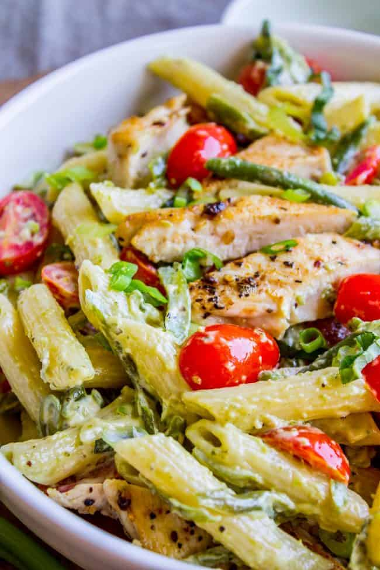

Back to Home
EASY Penne Pesto Chicken

Description
This is a simple and delicious recipe for Penne Pesto Chicken that's ideal for meal prep!
The quanities in this recipe will make 4 servings.
Ingredients
- 1 tbsp olive oil
- 1 lb chicken breast
- 2 cups of asparagus, cut into 1.5in pieces
- 10oz of cherry tomatoes
- 2 cups chickpea penne pasta
- 2/3 cup pesto
Steps
- Begin boiling a pot of water for the pasta
- While waiting for the water to boil, begin cooking the chicken. Ensure a good sear.
- Cook the pasta and finish the chicken. Dice the chicken into cubes.
- Heat oil in a large skillet. Toss in the asparagus and cook for about 3 minutes to soften.
- Add in the pesto, pasta, and the chicken then stir to combine.
- Toss in the cherry tomatoes and stir again.
- After a few minutes, remove everything and distribute into separate containers for a week of meal prep completed!
Return to top